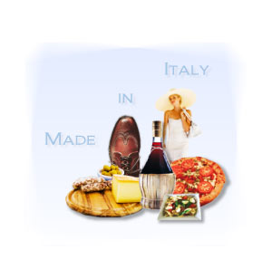

Il Made in Italy a tavola
www.daniele_blog.it/Il Made in Italy al tavola
Consorzio
Il Consorzio per la Tutela del Formaggio Grana Padano è stato costituito nel 1954. Oggi riunisce oltre 200 produttori, stagionatori e commercianti di formaggio Grana Padano.
Link utili per approfondire l'argomento
Spot radio
Ascolta gli 'spot radiofonici' del Grana Padano. Answer the following questions in English.
Per gentile concessione del Consorzio per la Tutela del Formaggio Grana Padano.
(Reproduced with the permission of Grana Padano.)
Which radio 'spot' relates to the export potential of il Grana Padano? Explain why.
Dogana: The person is being asked to open his luggage for customs control. So obviously the cheese is being taken out of Italy.
Which 'spot' has an emphasis on Italian consumers? Explain why.
Papà: It highlights how Italians consider the cheese to have great nutritional benefits. They view il Grana Padano as being a part of their life and want to pass on this tradition to their children.
Clicca qui to read the sample answers.
Spot TV
View the following advertisements.
Supermercato
Tradizione e qualità
Per gentile concessione del Consorzio per la Tutela del Formaggio Grana Padano.
(Reproduced with the permission of Grana Padano.)
Quale 'spot' preferisci? Perché?
Speak about the 'spot TV' of your choice in Italian.
Use it as a stimulus to engage in further discussion on the topic: Made in Italy.
Refer to Stimulus for tips to help you with this activity.
Link utili
Degustazione del Grana Padano
ln cucina il Grana Padano dà sempre soddisfazione!
Organise a degustazione in class or with friends where each person brings a dish.
View the selection of ricette on il Grana Padano site www.granapadano.it select ricette.
You can choose from antipasti, primi o secondi.
Select a recipe that appeals to you to prepare for la degustazione.
If you have difficulty finding the cheese, you can ask the shop assistant about a possible alternative.
Vuoi partecipare ad un programma di cucina?
Scegli un piatto tipico australiano o italiano da preparare nel programma.
Prepare a presentation that describes the steps on how to make the dish.
The presentation may be a video or another form of your choice that is suitable for this activity.
Practise for this experience. It will help you to be confident with your delivery.
If you prefer, you may describe and demonstrate how to play an Australian sport to an Italian audience.